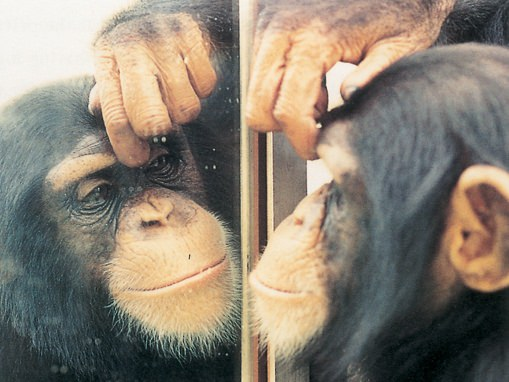

-
A.k.a. mark test, mirror self-recognition (MSR) test, red spot technique, rouge test, or red-dye test.
-
A behavioral technique developed in 1970 by American psychologist Gordon Gallup.
-
Checking whether an animal has visual self-recognition (got self-awareness).
-
Yet, for some animals this test is inappropriate (better use songs or scents).
-

Figure 1. An ape checking for the red dot on its forehead
Procedure
-
Anesthetize an animal, paint a red dot on it’s face, put it in front of a mirror.
-
A great ape will immediately touch itself there (elephants, dolphins, orcas), a lesser ape (monkey) not.
-
The identify (or not) that the image in the mirror is themselves.
Background
-
Other animals were not able to do that.
-
Humans develop that skill at about 2 years old.